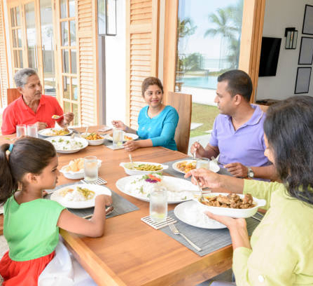

Antibiotics or hormones
Used in our feed or farming operations.
Our Manifesto
Anthoney’s Chicken superiority difference comes to market under the following 8 key unmatchable differentiative and scientifically established procedure manifesto.
Used in our feed or farming operations.
Under 0 Celsius, as soon as the meat is routed.
For Salmonella, E.coli and Coliform in our in-house laboratory.
We meet the requirements of ISO 14064-1:2018.
Commandments 01 – 03

We only utilise natural raw material and follow a completely 100% natural manufacturing method infused with modern science & technology.
In the broiler industry, a technique known as selective breeding is used to promote specific desirable features in birds in order to obtain higher weights. Priority is given to high-quality raw materials while preparing meal rations (soya, maize, and so on.)
We deploy cutting-edge biotechnology methods for hatching eggs into end-user meat products in a state-of-the-art factory facility for broiler meat production.
We guarantee that no antibiotics or hormones are used in our feed or farming operations.
For optimal outcomes, we utilise in feed
At all times, we adhere to biologically secure farming standards.
To keep the process as natural as possible, we take biosecurity measures on our farms to avoid exposing birds to disease-causing germs.
In Farming and production processes, Anthoney's follows the scientific certified methods of the animal welfare criteria set forth by the National Chicken Council (NCC) in the United States.
This is the primary determining element in Anthoney’s ability to compete with other chicken producers. The hatchery is where the welfare of the chicken birds begins at Anthoney’s.
How welfare is ensured
In production engineering, Anthoney’s has assured the best quality chicken is produced.
Commandments 04 – 05

Our natural preservation method ensures the freshness of our products.
Mainly our preservation method is chicken chilling. The organoleptic qualities (taste, sight, smell, and texture) of the product are well retained, and the nutrients of the food are well preserved, ensuring the product’s freshness.
As soon as the meat is routed, it moves into chilled water under 0 Celsius temperature in 17 minutes so that any contagions will not arise in chicken meat.
The attention to our products is ensured by specialised & protective meat produce principles.
Salmonella, E.coli, and Coliform are the most critical causes of food poisoning.
Our products are tested for these microorganisms on a daily basis in an in-house microbiology laboratory.
Beyond our own lab
Also, we test meat for zero heavy metal content through certified 3rd party labs. This has been further restricted & guided through our chilling process. This is a 100% natural process & Anthoney’s is not using any chemicals on these food engineering principles.
Commandments 06 – 07

We are committed to addressing protein-energy malnutrition in Sri Lanka by providing goods that high in most Amino Acids.
According to statistics, Sri Lankan children under the age of five do not consume enough protein and energy from their diets.
Chicken meat is the most cost-effective and nutrient-dense food option for this because it includes the majority of necessary amino acids, which are required for children’s growth and must be obtained through diet because they are not generated by the human body.
Source: Review of the Functioning and impact of mother support groups — UNICEF & World Bank / trading economics reports.
We are continually working to alleviate common consumer cooking discomforts.
We are more focused on selling goods that solve the hassles of cooking the chicken all of the time as a customer-driven company. On this foundation, many of our products have succeeded.
For example
Commandment 08

We assure all of our stakeholders, that we will continue to operate in an environmentally sustainable manner throughout our whole farming and production process.
As a responsible member of society, we incorporated the following practices into our operations, resulting in environmental sustainability:
Watch